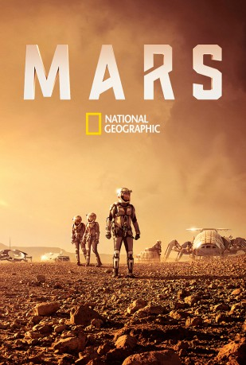

")
 
 IMDB-Wertung: 7.5 / 10
IMDB-Wertung: 7.5 / 10  Metascore:
Metascore: 
Von jeher zieht der Mars die Menschheit in seinen Bann. Die Möglichkeit, dass Menschen zum Mars reisen und den lebensfeindlichen Planeten besiedeln, beschäftigt Top-Wissenschaftler seit Jahrzehnten. Wird es unsere Generation sein, die eine Kolonie auf dem Mars errichten wird? Dies ist eine der zentralen Fragen von „Mars“. Dabei schlägt die sechsteilige Serie einen Bogen von der Gegenwart in die Zukunft, in dem die erste bemannte Mars-Mission stattfinden wird. Ausgangspunkt der Geschichte ist das Jahr 2033: Das erste bemannte Raumschiff, die Daedalus, startet zum Mars. Die dramatische Handlung spielt sowohl an Bord der Daedalus als auch im Mission Control Centre auf der Erde.
Jahr: 2016
Dauer: 47 Minuten
FSK:
Land: USA Studio: National Geographic ChannelTonspuren: DTS - ,
Untertitel: Deutsch,
Auflösung: 720p (1280x720) Größe: 2498 MB
Genre: Drama, Sci-Fi, Abenteuer, TV-Serie
Regisseur: Everardo Gout
Drehbuch: Fabio Guaglione
Soundtrack:
Darsteller:
 Olivier Martinez als Ed Grann
Olivier Martinez als Ed Grann Cosima Shaw als Leslie Richardson
Cosima Shaw als Leslie Richardson Máté Haumann als IMSF Member USA
Máté Haumann als IMSF Member USADatei: X:\HD-Serien\MARS S01\MARS S01E01.mkv seit 02.05.2017
Festplatte: HD Serien(I-ST)
 Es gibt insgesamt 182 Filme in der Gruppe 'HD-Serien'
Es gibt insgesamt 182 Filme in der Gruppe 'HD-Serien'